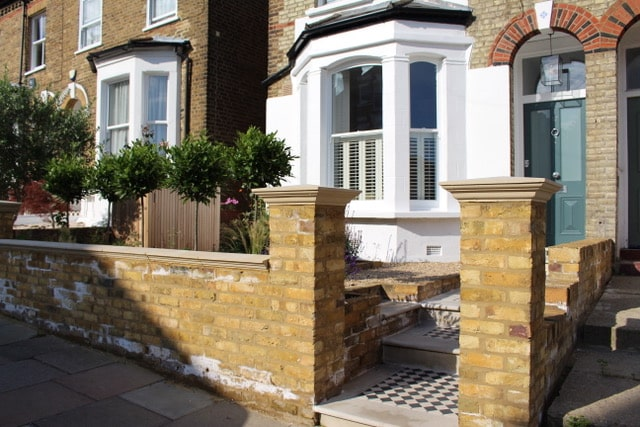

Smart Front Garden
This Wandsworth Front garden was not in great shape and being within a Conservation Area we needed to ensure that the garden used sympathetic materials in keeping with the Victorian style. We have used London Stock brick for the walls with bullnosed sawn sandstone for the steps and have put in a traditional Victorian tile path. The planting was designed to have evergreen topiary for all year round interest and a mix of grasses and perennials for seasonal interest. This garden was certainly a challenging renovation having 3 different falls, not much being square to anything, but thanks to the hard graft of the landscapers (James Ewen Powell), the garden was built beautifully and the clients can enjoy!